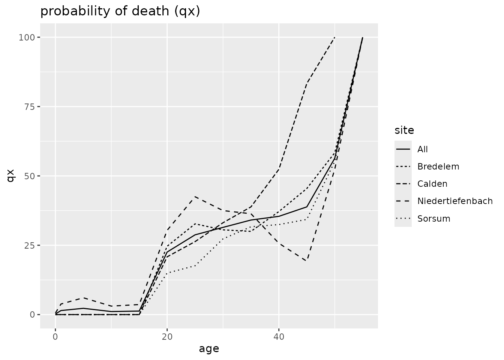
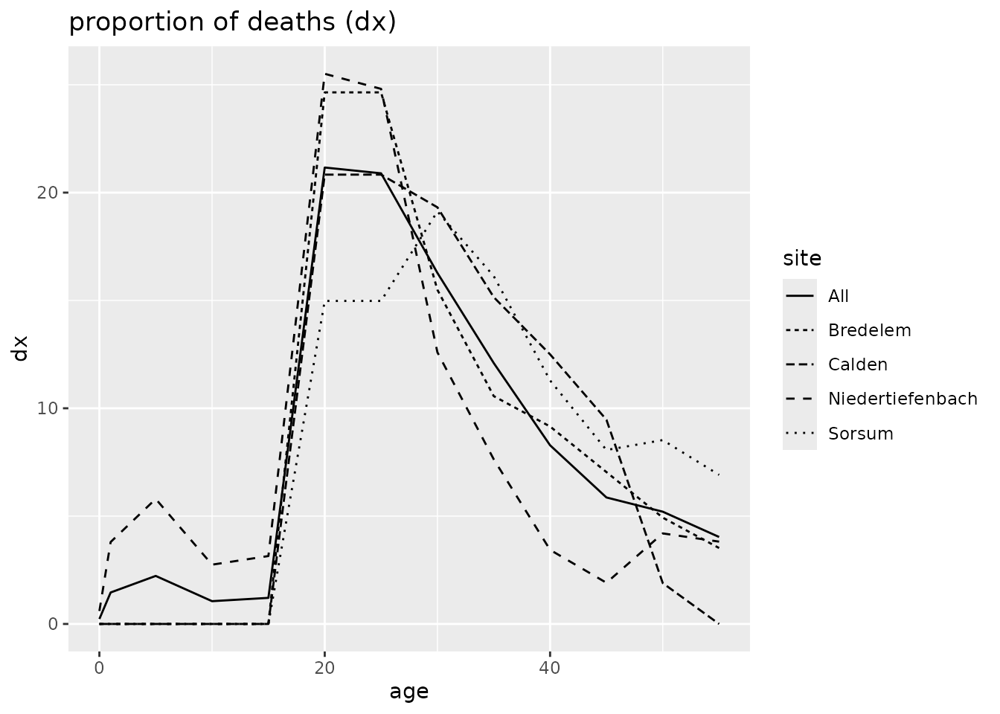
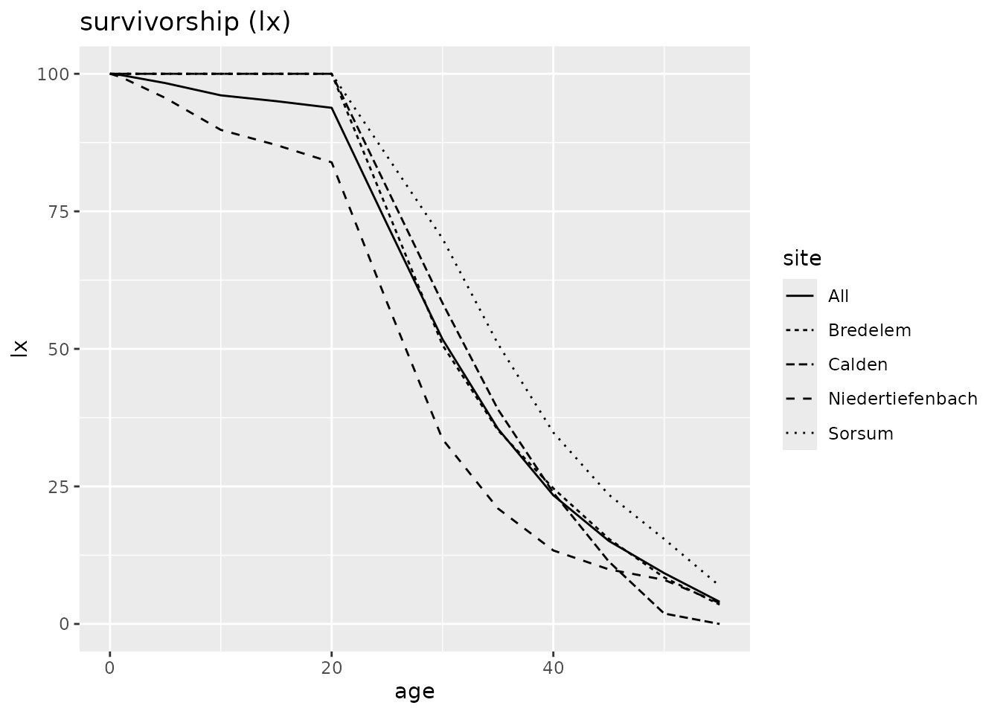
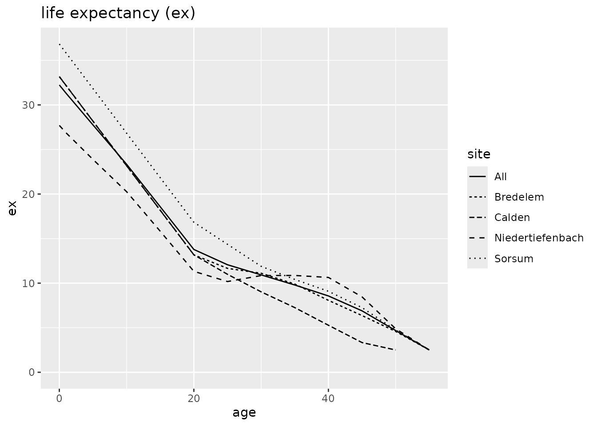
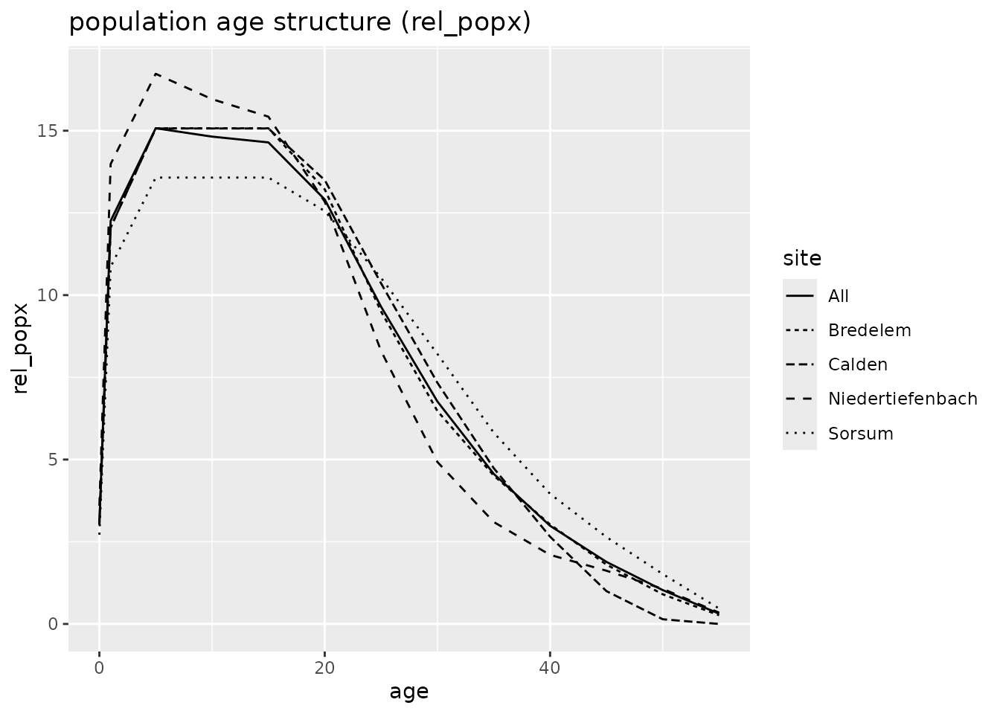

Example: Neolithic Gallery graves
Clemens Schmid
March 2017
Source:vignettes/example_1.Rmd
example_1.RmdMake test data available
Data from four neolithic gallery graves in central Germany (Czarnetzki 1966).
td <- gallery_gravesInspect the data. Show the first ten rows of the data set:
| indnr | sex | age | site |
|---|---|---|---|
| 2 | m | 20-30 | Niedertiefenbach |
| 7 | m | 20-30 | Niedertiefenbach |
| 9 | m | 40-50 | Niedertiefenbach |
| 9t | m | 50-60 | Niedertiefenbach |
| 23 | m | 20-30 | Niedertiefenbach |
| 30 | m | 20-30 | Niedertiefenbach |
| 39 | m | 20-30 | Niedertiefenbach |
| 45 | m | 20-30 | Niedertiefenbach |
| 58 | m | 30-40 | Niedertiefenbach |
| 69 | m | 20-30 | Niedertiefenbach |
Clean up data
Replace: “?” with NA values.
| indnr | sex | age | site |
|---|---|---|---|
| 2 | m | 20-30 | Niedertiefenbach |
| 7 | m | 20-30 | Niedertiefenbach |
| 9 | m | 40-50 | Niedertiefenbach |
| 9t | m | 50-60 | Niedertiefenbach |
| 23 | m | 20-30 | Niedertiefenbach |
| 30 | m | 20-30 | Niedertiefenbach |
| 39 | m | 20-30 | Niedertiefenbach |
| 45 | m | 20-30 | Niedertiefenbach |
| 58 | m | 30-40 | Niedertiefenbach |
| 69 | m | 20-30 | Niedertiefenbach |
Translate “inf_I”, “inf_I” and “juv” into numeric age ranges (Martin 1928, 580).
td <- td %>%
replace(td == "inf_I", "0-6") %>%
replace(td == "inf_II", "7-13") %>%
replace(td == "juv", "14-19")| indnr | sex | age | site |
|---|---|---|---|
| 2 | m | 20-30 | Niedertiefenbach |
| 7 | m | 20-30 | Niedertiefenbach |
| 9 | m | 40-50 | Niedertiefenbach |
| 9t | m | 50-60 | Niedertiefenbach |
| 23 | m | 20-30 | Niedertiefenbach |
| 30 | m | 20-30 | Niedertiefenbach |
| 39 | m | 20-30 | Niedertiefenbach |
| 45 | m | 20-30 | Niedertiefenbach |
| 58 | m | 30-40 | Niedertiefenbach |
| 69 | m | 20-30 | Niedertiefenbach |
Remove rows that do not have age information.
| indnr | sex | age | site |
|---|---|---|---|
| 2 | m | 20-30 | Niedertiefenbach |
| 7 | m | 20-30 | Niedertiefenbach |
| 9 | m | 40-50 | Niedertiefenbach |
| 9t | m | 50-60 | Niedertiefenbach |
| 23 | m | 20-30 | Niedertiefenbach |
| 30 | m | 20-30 | Niedertiefenbach |
| 39 | m | 20-30 | Niedertiefenbach |
| 45 | m | 20-30 | Niedertiefenbach |
| 58 | m | 30-40 | Niedertiefenbach |
| 69 | m | 20-30 | Niedertiefenbach |
Make a decision on individual 139 from Niedertiefenbach with age less or equal 60.
td[td$indnr == "139" & td$site == "Niedertiefenbach", ]$age <- "50-60"| indnr | sex | age | site |
|---|---|---|---|
| 2 | m | 20-30 | Niedertiefenbach |
| 7 | m | 20-30 | Niedertiefenbach |
| 9 | m | 40-50 | Niedertiefenbach |
| 9t | m | 50-60 | Niedertiefenbach |
| 23 | m | 20-30 | Niedertiefenbach |
| 30 | m | 20-30 | Niedertiefenbach |
| 39 | m | 20-30 | Niedertiefenbach |
| 45 | m | 20-30 | Niedertiefenbach |
| 58 | m | 30-40 | Niedertiefenbach |
| 69 | m | 20-30 | Niedertiefenbach |
Separate the age range column.
## Warning: Expected 2 pieces. Missing pieces filled with `NA` in 1 rows
## [35].| indnr | sex | from | to | site |
|---|---|---|---|---|
| 2 | m | 20 | 30 | Niedertiefenbach |
| 7 | m | 20 | 30 | Niedertiefenbach |
| 9 | m | 40 | 50 | Niedertiefenbach |
| 9t | m | 50 | 60 | Niedertiefenbach |
| 23 | m | 20 | 30 | Niedertiefenbach |
| 30 | m | 20 | 30 | Niedertiefenbach |
| 39 | m | 20 | 30 | Niedertiefenbach |
| 45 | m | 20 | 30 | Niedertiefenbach |
| 58 | m | 30 | 40 | Niedertiefenbach |
| 69 | m | 20 | 30 | Niedertiefenbach |
Adjust variable types.
td <- td %>%
transform(
from = as.numeric(from),
to = as.numeric(to)
)Analysis preparation
Control the flow of the analysis by exemplifying what the different variables of the input data stand for.
# tdlist <- td %>%
# plyr::dlply("site", identity)
td_prepared <- prep.life.table(
td,
dec = NA,
agebeg = "from",
ageend = "to",
group = "site",
method = "Standard",
agerange = "included"
)Analysis
td_result <- td_prepared %>%
life.table()Plot
## Warning: Removed 1 row containing missing values or values outside the scale range
## (`geom_line()`).
## Warning: Removed 1 row containing missing values or values outside the scale range
## (`geom_line()`).
References
Czarnetzki, A. 1966. “Die Menschlichen Skelettreste
Aus Vier Neolithischen Steinkisten Hessens Und
Niedersachsens.” Dissertation. Tuebingen.
Martin, Rudolf. 1928. Lehrbuch der
Anthropologie in systematischer Darstellung. Mit besonderer
Beruecksichtigung der anthropologischen Methoden. Band 2:
Kraniologie. 2. ed. Jena: G. Fischer. https://doi.org/10.11588/diglit.37612.